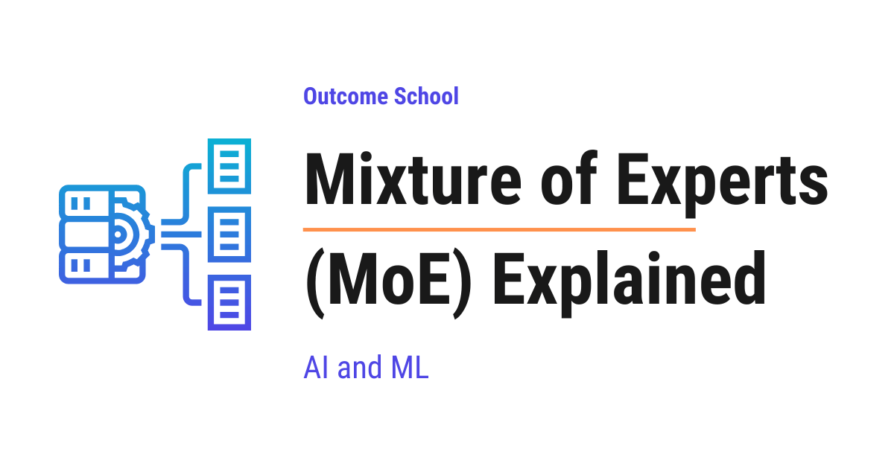

What is Mixture of Experts (MoE) and How Does It Work?
On this page
- The Big Picture
- Why Was Mixture of Experts Needed?
- What Is an Expert?
- The Router
- Where Does MoE Sit Inside a Transformer?
- Sparse Activation
- Active Parameters vs Total Parameters
- Load Balancing
- How Outputs Are Combined
- Advantages of Mixture of Experts
- Challenges of Mixture of Experts
- Why MoE Powers Many Modern LLMs
- Summary
- Frequently Asked Questions

Mixture of Experts (MoE) is a neural network architecture that has many smaller networks called experts, and a router that activates only a few of them for each input. This makes large models faster and cheaper to run.
In this blog, we will learn about the Mixture of Experts (MoE) architecture - understanding what experts are, how the router picks them, why MoE makes large models faster and cheaper, and why it powers many of today's most powerful Large Language Models (LLMs).
When we hear "Mixture of Experts", it sounds complex. But do not worry. If we break it down into its individual parts, every single piece is simple. Our goal is to explain this architecture so clearly that by the end, we will be able to explain how Mixture of Experts works to anyone.
We will cover the following:
- Why Mixture of Experts was needed
- What an "expert" really means
- The router and how it picks experts
- Where MoE sits inside a Transformer
- Sparse activation and why it saves compute
- Load balancing across experts
- Advantages and challenges of MoE
- Why MoE powers many modern LLMs
Let's get started.
The Big Picture
Before we go into the details, let's understand the big picture.
A Mixture of Experts model is a special kind of neural network where, instead of using one big network for every input, the model has many smaller networks called experts and only activates a few of them for each input. A small component called the router decides which experts to use for each input.
In simple words: Mixture of Experts = Many small expert networks + A router that picks which ones to use.
Think of it like a hospital. A hospital does not have one single doctor who treats every patient. It has many specialists - a heart specialist, a skin specialist, a brain specialist, and so on. When a patient walks in, a receptionist (the router) sends them to the right specialist (the expert). The patient does not need to meet every doctor in the hospital. They only meet the ones who are relevant to their problem.
This is exactly how Mixture of Experts works inside an LLM.
Why Was Mixture of Experts Needed?
Before MoE, large language models were dense. Dense means every token uses every single parameter of the model. If a model has 100 billion parameters, every token uses all 100 billion parameters during inference.
This had two big problems:
Problem 1: Compute cost. As models grew bigger to become smarter, the compute cost grew with them. A bigger model meant slower inference and higher GPU bills for every single token.
Problem 2: Wasted capacity. Not every input needs every part of the model. Different inputs benefit from different sub-networks, but in a dense model, every input is forced to pass through every parameter, whether it needs them or not.
So, here comes the Mixture of Experts to the rescue. It lets us build a model with a huge total number of parameters while only using a small fraction of them for each input. We get the benefits of a massive model without paying the full compute cost.
What Is an Expert?
An expert is simply a small neural network. In most modern LLMs, each expert is a small feed-forward network - the same kind of feed-forward network we already know from the Transformer architecture.
A Transformer layer in an MoE model can have 8 experts, or 64 experts, or even 128 experts sitting side by side. Each expert is a complete feed-forward network on its own.
Note: The word "expert" can be misleading. An expert is not specially trained on math or physics. The model learns on its own which experts should handle which kinds of inputs during training. In practice, experts often specialize by low-level patterns like punctuation, word types, or token shapes, not by high-level topics. There is no manual labeling.
The Router
Now that we have many experts sitting side by side, the next question is: how does the model decide which expert to use for each input?
This is where the router comes in. The router is a tiny neural network that looks at each input token and decides which experts should process it. In practice, the router is usually just a linear layer followed by a softmax, not a deep network.
The router works in three simple steps.
First, the router looks at the input token and produces a score for every expert. If there are 8 experts, the router produces 8 scores. The math behind it is simple: Router(x) = Softmax(x * W_router), where x is the input token and W_router is the router's learned weight matrix. The softmax is just a function that turns raw scores into probabilities that add up to 1.
Then, the router picks the top-k experts with the highest scores. In most MoE models, k = 2, meaning only the top-2 experts are picked for each token. Some models like Switch Transformer use k = 1.
Finally, the token is sent only to those top-k experts. The other experts are completely skipped for this token.
Here is a simple visual of the router picking experts. Suppose in this example, the router picks E3 and E5:
Token
|
Router
|
+------+------+----+----+------+------+
| | | | | |
v v v v v v
E1 E2 [ E3 ] E4 [ E5 ] ... E8
| |
v v
Out_3 Out_5
\ /
\ /
\ /
Weighted Sum
(Combined)
|
v
Output
Only the picked experts run. The rest stay idle for this token. This is how MoE works at its core.
Where Does MoE Sit Inside a Transformer?
Before we go further, let's quickly recall the structure of a Transformer layer. Each Transformer layer has two main sub-layers:
- A multi-head attention sub-layer
- A feed-forward sub-layer
In a normal (dense) Transformer, the feed-forward sub-layer is one single big network that every token passes through.
In an MoE Transformer, the feed-forward sub-layer is replaced with a Mixture of Experts. The multi-head attention sub-layer stays the same. Only the feed-forward part is replaced.
Here is a simple visual:
Input to Transformer Layer
|
v
Multi-Head Attention
|
v
Router (picks top-k experts)
|
+----+----+----+----+----+----+----+
| | | | | | | |
v v v v v v v v
E1 E2 [E3] E4 [E5] E6 E7 E8 (only top-k run)
|
v
Output
So MoE does not replace the entire Transformer. It only replaces the feed-forward sub-layer inside each Transformer layer. Everything else stays the same.
Note: Not every layer has to be an MoE layer. Some MoE models alternate between dense layers and MoE layers. This is a design choice.
Sparse Activation
This is where MoE becomes powerful. Because only a few experts run for each token, we say the model is sparsely activated.
Let's take an example. Suppose we have an MoE model with 8 experts in each layer, and the router picks the top 2 experts for each token. This means only 2 out of 8 experts run for each token. The other 6 stay idle.
Note: Each MoE layer has its own router with its own learned weights. So if a model has 32 MoE layers, it has 32 separate routers - one for each layer. Routers are not shared across layers, because each layer learns its own way of dispatching tokens to its own set of experts.
Here is a simple visual showing one router per MoE layer:
Token
|
v
+-------------------------+
| Transformer Layer 1 |
| |
| Multi-Head Attention |
| | |
| Router 1 |
| | |
| E1 .. [E3] .. E8 |
+------------|------------+
v
+-------------------------+
| Transformer Layer 2 |
| |
| Multi-Head Attention |
| | |
| Router 2 |
| | |
| E1 .. [E5] .. E8 |
+------------|------------+
v
...
|
v
+-------------------------+
| Transformer Layer 32 |
| |
| Multi-Head Attention |
| | |
| Router 32 |
| | |
| E1 .. [E2] .. E8 |
+------------|------------+
v
Output
Each MoE layer has its own router and its own set of experts. The picked experts can be different at every layer.
So even though the model has the total parameters of all 8 experts, the actual compute used per token is only the compute of 2 experts. This is a huge saving.
Active Parameters vs Total Parameters
MoE models are often described as having "total parameters" and "active parameters". Total parameters are the full size of the model. Active parameters are the parameters actually used per token.
Let's say each expert has 10 billion parameters. The model has a total of 80 billion parameters across all 8 experts. But for each token, only 20 billion parameters are actually used. The model behaves like a 20-billion-parameter model in terms of compute, but it carries the knowledge of an 80-billion-parameter model.
For example, Mixtral 8x7B has 8 experts and is built on top of a 7-billion-parameter base. The total size is around 47 billion parameters, but only about 13 billion are active per token. The model is fast like a 13-billion-parameter model but smart like a 47-billion-parameter model.
Note: A common confusion is "8 x 7 = 56, so why is Mixtral 47B and not 56B?". The reason is that only the feed-forward sub-layer is replicated across experts. The attention layers, embeddings, and normalization layers are shared across all experts. So the total parameters are not simply (number of experts) x (expert size).
In simple words: a big brain with a small bill.
Load Balancing
Now, here is the catch. What if the router keeps picking the same 2 experts for every token? Then the other 6 experts never learn anything, and the model wastes its capacity.
This is a real problem in MoE training, and it is called the load imbalance problem.
To solve this, MoE models use a special technique called load balancing. During training, an extra signal called the auxiliary load balancing loss (introduced in papers like Switch Transformer and GShard) is added to the main loss. This extra loss pushes the router to spread tokens more evenly across all experts. This way, every expert gets a fair share of tokens to learn from.
Think of it like a manager in an office. If only two employees get all the work and the rest sit idle, the team is unbalanced. A good manager makes sure work is spread fairly across the team. The load balancing loss is exactly that manager for the router.
Without load balancing, MoE models collapse - only a few experts get used and the rest become dead weight. With load balancing, all experts learn useful skills and the model uses its full capacity.
There is also one more practical detail called expert capacity. Each expert can only process a fixed number of tokens per batch. If too many tokens get routed to the same expert, the extra tokens are either dropped or sent to the next-best expert. This capacity limit is what makes load balancing critical in real systems.
How Outputs Are Combined
When the router picks the top-k experts for a token, each picked expert produces its own output. So how does the model combine these outputs into a single output?
The router does not just pick the top-k experts. It also produces weights for them - numbers that tell us how much to trust each picked expert. The final output is a weighted sum of the outputs from the picked experts.
In simple words: final output = weight_1 * Expert_1(input) + weight_2 * Expert_2(input) (for top-2 experts).
The weights come from a softmax applied only over the picked experts' scores (not all experts), so the weights for the picked experts add up to 1.
Let's walk through a concrete example. Suppose a token enters an MoE layer with 8 experts:
- Step 1: The router scores all 8 experts. Say the top-2 are Expert 3 with score
0.7and Expert 5 with score0.3. - Step 2: Only Expert 3 and Expert 5 run. Expert 3 produces an output vector
Out_3. Expert 5 produces an output vectorOut_5. - Step 3: The model combines them as: final output = 0.7 * Out_3 + 0.3 * Out_5.
- Step 4: This final output is passed to the next Transformer layer.
So Expert 3's output is trusted more than Expert 5's output because its router score is higher. This way, the model gets a smooth, blended answer from the top experts instead of a rough one-expert answer.
Advantages of Mixture of Experts
Let's understand why MoE has become so popular:
Massive scale at a fraction of the cost: We can build models with hundreds of billions or even trillions of total parameters while keeping the active parameters per token much smaller. This is the only practical way to push model size to the extreme.
Faster inference: Since only a few experts run per token, the actual compute per token is small. This means faster responses and lower GPU costs in production.
Specialization: Different experts naturally learn to handle different kinds of inputs. The router learns which expert is good at what, without anyone telling it. This gives the model rich, specialized knowledge.
Better scaling: Research has shown that MoE models often reach the same quality as dense models with much less compute during training.
Challenges of Mixture of Experts
MoE is not free. It comes with its own set of challenges:
Memory cost: Even though only a few experts run per token, all experts must be loaded into memory. So an 80-billion-parameter MoE model still needs the GPU memory to hold 80 billion parameters, even if it only uses 20 billion per token.
Load balancing is tricky: Without careful training, the router collapses to a few experts. Engineers need to add load balancing losses and tune them carefully.
Communication cost: In large MoE models, experts often live on different GPUs. Sending tokens to the right GPU and getting the results back adds communication overhead. Serving engines like SGLang are built to spread these experts across many machines and keep this overhead low.
Harder to fine-tune: Fine-tuning MoE models is trickier than fine-tuning dense models because the router behavior can shift during fine-tuning.
Why MoE Powers Many Modern LLMs
Many of today's most powerful LLMs use Mixture of Experts under the hood. Mixtral, DeepSeek-V2, DeepSeek-V3, and several other frontier models are all MoE-based. There are also strong rumors that many of the top closed-source models use MoE internally.
The reason is simple. As models keep getting bigger, dense models hit a wall. Training and serving a dense model with hundreds of billions of parameters is extremely expensive. MoE breaks this wall by letting us grow the total size of the model without growing the per-token compute at the same rate.
In short, MoE is the answer to the question: how do we keep making models smarter without making them slower and more expensive?
Summary
Let's recap what we have learned:
- Mixture of Experts is an architecture where many small expert networks sit side by side, and a router picks only a few of them for each token.
- Experts are small feed-forward networks. They are not manually specialized - the model learns on its own which expert handles what.
- The router is a tiny network that scores experts and picks the
top-kfor each token. - Sparse activation means only the picked experts run, which makes MoE fast even when total parameters are huge.
- MoE replaces the feed-forward sub-layer inside a Transformer layer. Attention stays the same.
- Load balancing is needed to make sure all experts get used during training.
- Outputs are combined as a weighted sum based on the router's scores.
- MoE gives us massive scale at a fraction of the cost, which is why it powers many of today's most powerful LLMs.
Now we have learned the Mixture of Experts architecture and understood how it works.
Frequently Asked Questions
Does Mixture of Experts reduce the GPU memory needed?
No. Even though only a few experts run per token, all experts must be loaded into memory. So, an 80-billion-parameter MoE model still needs the GPU memory to hold 80 billion parameters, even if it only uses 20 billion per token. MoE saves compute, not memory.
Why is Mixtral 8x7B around 47B parameters and not 56B?
Because only the feed-forward sub-layer is replicated across experts. The attention layers, embeddings, and normalization layers are shared across all experts. So, the total parameters are not simply the number of experts multiplied by the expert size. Only about 13 billion parameters are active per token.
Is each expert trained on a specific topic like math or physics?
No. There is no manual labeling. The model learns on its own which experts should handle which kinds of inputs during training. In practice, experts often specialize by low-level patterns like punctuation, word types, or token shapes, not by high-level topics.
Do all MoE layers share the same router?
No. Each MoE layer has its own router with its own learned weights. If a model has 32 MoE layers, it has 32 separate routers. Each layer learns its own way of dispatching tokens to its own set of experts, so the picked experts can be different at every layer.
What happens if too many tokens are sent to the same expert?
Each expert can only process a fixed number of tokens per batch, which is called expert capacity. If too many tokens get routed to the same expert, the extra tokens are either dropped or sent to the next-best expert. This limit is what makes load balancing critical in real systems.